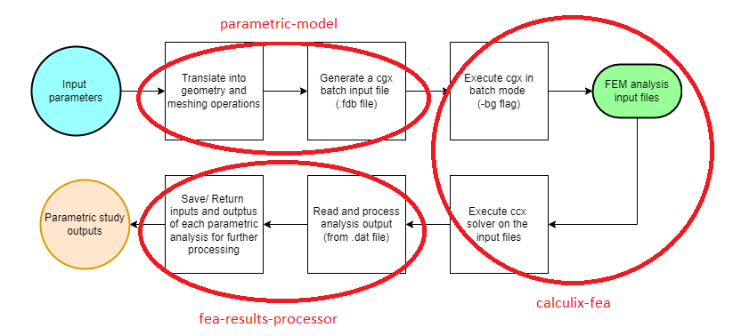

Chaining component analyses
Contents
Chaining component analyses#
Duration: 30 min
In this tutorial we explore the usage of Connections to chain the execution of Components. The example also introduces a finite element analysis specific ‘calculix-fea-comp’ component API.
{kind=link}
Create the Components#
This example replicates the chained analyses described in Parts 1 and 2 of our Parametric wing model series that make use of python and the open source finite element analysis software CalculiX GraphiX and CrunchiX to create and analyse a parametric composite wing model.
This tutorial doesn’t go into the details of the python code, since this was already covered in the videos and associated blog posts (see [References]{tutorials-Chaining_component_analyses-references}). Our main focus here is to show how the previously monolithic python code can be split into discrete and potentially re-usable Components.
We group the parametric model analysis processes into three distinct Components as shown in the figure below.
{kind=link}
Parametric-model component#
The parametric-model component defines a parametric three-dimensional wing geometry in python. It also outputs meshing instructions for Calculix GraphiX in the .fdb file format.
The component Parameters include the span and chord of the wing, as well as the aerofoil wing cross-section, which is defined by uploading a CSV input file with x and y section coordinates.
Create the component:
Right-click in the workspace and select
Add Empty Node. Select the empty component to edit it.In the
Propertiestab, fill in the component name,parametric-model, and select the generic python component APIgeneric-python3-comp:latest.Copy the contents of the
setup.py,compute.py,requirements.txtandnaca0012.csvfiles from below into a text editor, save them locally. Then upload the first 3 files under thePropertiestab and upload thenaca0012.csvunder theParameterstab by selectingupload user input files.In the
Propertiestab check the box next to theStart Nodeoption.Copy the contents of the parameters JSON object below into the
Parameterstab text box.Copy the following JSON object into the
Outputstab text box:
{
"files.cgx_file": "default"
}
Select
Save datato save and close the component.
from datetime import datetime
from pathlib import Path
def setup(
inputs: dict = None,
outputs: dict = None,
partials: dict = None,
parameters: dict = None,
) -> dict:
"""Editable setup function."""
# initalise setup_data keys
response = {"output_files.cgx_file": None}
# set default inputs
if inputs:
for input_key, input_value in inputs["design"].items():
if input_value == "default":
try:
inputs["design"][input_key] = parameters[input_key]
except Exception as e:
print(f"Could not find {input_key} in the input parameters.")
response["inputs"] = inputs
message = f"{datetime.now().strftime('%Y%m%d-%H%M%S')}: Setup completed."
print(message)
response["message"] = message
return response
from datetime import datetime
from pathlib import Path
import csv
from math import ceil
import numpy as np
import matplotlib.pyplot as plt
PLOT_FLAG = True
def compute(
inputs: dict = None,
outputs: dict = None,
partials: dict = None,
options: dict = None,
parameters: dict = None,
) -> dict:
"""Editable compute function."""
# check input files have been uploaded
inputs_folder = Path(parameters["inputs_folder_path"])
if not (inputs_folder / parameters["airfoil_csv_file"]).is_file():
raise FileNotFoundError(
f"{parameters['airfoil_csv_file']} needs to be uploaded by the user."
)
print("Starting user function evaluation.")
component_inputs = parameters # default values
run_folder = Path(parameters["outputs_folder_path"])
if inputs:
for input_key, input_value in inputs["design"].items():
component_inputs[input_key] = input_value
geometry = get_geometry(
component_inputs, run_folder, inputs_folder, plot_flag=PLOT_FLAG
)
cgx_fdb_path = get_cgx_input_file(geometry, component_inputs, run_folder)
# check output has been saved
if not cgx_fdb_path.is_file():
FileNotFoundError(f"{str(cgx_fdb_path)} is not a file.")
outputs["implicit"]["files.cgx_file"] = cgx_fdb_path.name
message = f"{datetime.now().strftime('%Y%m%d-%H%M%S')}: Created cgx fdb file {cgx_fdb_path.name} with span {str(component_inputs['span'])}m."
print(message)
return {"message": message, "outputs": outputs}
def get_geometry(inputs, run_folder, inputs_folder, plot_flag=False):
"""Translate parameters into geometry description that CGX can understand,
that's points, lines and surfaces."""
if "airfoil_cut_chord_percentages" not in inputs:
inputs["airfoil_cut_chord_percentages"] = None
aerofoil = _get_aerofoil_from_file(
Path(inputs_folder, inputs["airfoil_csv_file"]),
plot_flag=plot_flag,
splitpc=inputs["airfoil_cut_chord_percentages"],
run_folder=run_folder,
)
points, seqa, split_points = _get_cgx_points_3d(
aerofoil, inputs["chord"], inputs["span"]
)
lines, rib_surfaces, aero_surfaces, bodies, aero_surfaces_flip = _get_cgx_lines_3d(
seqa,
nele_foil=rint(inputs["nele_foil"]),
nele_span=int(inputs["nele_span"]),
split_points=split_points,
filled_sections=inputs["filled_sections_flags"],
)
return {
"aerofoil": aerofoil,
"points": points,
"point_seqa": seqa,
"lines": lines,
"surfaces": {
"ribs": rib_surfaces,
"aero": aero_surfaces,
"aero_surfaces_flip": aero_surfaces_flip,
},
"bodies": bodies,
}
def get_cgx_input_file(geometry, inputs, folder):
"""Write CGX batch commands to file."""
fdb_geom_file = folder / "cgx_infile.fdb"
if "boundary_conditions" in inputs:
fix_lines = rint(inputs["boundary_conditions"]["fix_lines"])
loaded_lines = rint(inputs["boundary_conditions"]["loaded_lines"])
if "loaded_surfaces" in inputs["boundary_conditions"]:
loaded_surfaces = rint(inputs["boundary_conditions"]["loaded_surfaces"])
else:
loaded_surfaces = None
else:
fix_lines = None
loaded_lines = None
loaded_surfaces = None
# create string of all input commands
cgx_commands = _get_commands(
geometry,
fix_lines,
loaded_lines,
loaded_surfaces=loaded_surfaces,
merge_tol=inputs["node_merge_tol"],
cgx_ele_type=int(inputs["cgx_ele_type"]),
solver=inputs["cgx_solver"],
)
# write string of commands to file
with open(fdb_geom_file, "w", encoding="utf-8") as f:
f.write("".join(cgx_commands))
return fdb_geom_file
########### Private functions that do not get called directly
def rint(items):
# cover integer values after json import
return [int(item) for item in items]
def _get_aerofoil_from_file(
file, plot_flag=True, splitpc=None, pt_offset=6, run_folder=None
):
"""
This function reads an aerofoil geometry from csv and calculates tc_max.
Args:
file: file with xy-positions of the airfoil outline in Selig format.
For example http://airfoiltools.com/airfoil/seligdatfile?airfoil=n0012-il
Returns:
airfoil data
"""
# read aerofoil input file
airfoil = []
with open(file, mode="r", encoding="utf-8") as infile:
reader = csv.reader(infile, skipinitialspace=True)
for row in reader:
airfoil.append(row)
name = airfoil[0]
coordinates = np.array([string[0].split() for string in airfoil[1:]], dtype=float)
# replace the last coordinate to close the airfoil at the trailing-edge
coordinates[-1] = coordinates[0]
# we assume that there is a [0.0, 0.0] point in the airfoil
LE_index = np.where(coordinates[:, 0] == 0.0)[0][0]
leading_edge_pt = LE_index
splits = []
if splitpc:
# check that there are enough points to split the section
min_points = 100
if len(coordinates) < min_points:
raise ValueError(
"The parameter 'airfoil_cut_chord_percentages' requires "
f"at least {min_points:d} airfoil spline points in 'airfoil_csv_file'"
)
# re-order the pc from TE to LE
splitpc.sort(reverse=True)
# trim points that are within min number of points form leading or trailing edge
trimmed_coords = np.hstack(
[np.array([np.arange(len(coordinates))]).T, coordinates]
)
trimmed_coords = np.vstack(
[
trimmed_coords[pt_offset : int(LE_index - ceil(pt_offset / 2)), :],
trimmed_coords[int(LE_index + ceil(pt_offset / 2)) : -pt_offset, :],
]
)
# find two points that match the percentage chord closely
for split_number, split in enumerate(splitpc):
point_distances_x = np.abs(trimmed_coords[:, 1] - split / 100)
pt = {"top": 0, "bot": 0}
dist_top = point_distances_x[0]
dist_bot = point_distances_x[-1]
for index, dist in enumerate(point_distances_x):
if dist < dist_top and trimmed_coords[index, 2] > 0:
pt["top"] = int(trimmed_coords[index, 0])
dist_top = dist
if dist < dist_bot and trimmed_coords[index, 2] < 0:
pt["bot"] = int(trimmed_coords[index, 0])
dist_bot = dist
if split_number >= 1:
# check number of points separating splits
if (
np.abs(pt["top"] - splits[-1]["top"]) < pt_offset
or np.abs(pt["bot"] - splits[-1]["bot"]) < pt_offset
):
raise ValueError(
f"Values {splitpc[split_number-1]} and {split:f} in "
"'airfoil_cut_chord_percentages' are too close together."
)
splits.append(pt)
if plot_flag:
plt.plot(coordinates[:, 0], coordinates[:, 1], "-xr")
if splitpc:
for split in splits:
plt.plot(
[coordinates[split["top"], 0], coordinates[split["bot"], 0]],
[coordinates[split["top"], 1], coordinates[split["bot"], 1]],
"-b",
)
plt.xlabel("x")
plt.ylabel("y")
plt.title(name)
plt.savefig(str(run_folder / "airfoil_coordinates.png"))
return dict(
name=name,
coordinates=coordinates,
splits=splits,
leading_edge_pt=leading_edge_pt,
)
def _get_cgx_points_3d(aerofoil, chord, span):
"""This function generates the CGX input file points and point sequences."""
if not isinstance(span, list):
span = [span]
if not isinstance(chord, list):
chord = [chord]
def wing_with_splits(aerofoil, chord, span):
seqa = []
starting_y = 0
pt_counter = 0
split_points = np.empty((len(aerofoil["splits"]), 2, 0), dtype=int)
for section_index, length_y in enumerate(span):
x = aerofoil["coordinates"][:, 0] * chord[section_index]
z = aerofoil["coordinates"][:, 1] * chord[section_index]
if section_index == 0: # only needed at the root of the wing
y_root = np.ones(x.size) * starting_y
points = np.vstack([x, y_root, z]).T
# section tip
y_tip = np.ones(x.size) * (starting_y + length_y)
points = np.append(points, np.vstack([x, y_tip, z]).T, axis=0)
def airfoil_seqa(pt_counter, seqa, all_split_points, x_size):
# SEQA for first airfoil top splines
pt = 0
split_points = []
for split in aerofoil["splits"]:
indices = np.arange(pt_counter + pt + 1, pt_counter + split["top"])
seqa.append(indices)
pt = split["top"]
split_points.append(pt_counter + split["top"])
# SEQA for first airfoil LE spline
seqa.append(
np.arange(
pt_counter + pt + 1,
pt_counter + aerofoil["leading_edge_pt"],
)
)
if any(aerofoil["splits"]):
seqa.append(
np.arange(
pt_counter + aerofoil["leading_edge_pt"] + 1,
pt_counter + aerofoil["splits"][-1]["bot"],
)
)
# SEQA for first airfoil bot spline
pt = x_size - 1
bot_seqa = []
for split in aerofoil["splits"]:
indices = np.flipud(
np.arange(
pt_counter + pt - 1, pt_counter + split["bot"], -1
)
)
bot_seqa.append(indices)
pt = split["bot"]
split_points.append(pt_counter + split["bot"])
bot_seqa.reverse()
seqa += bot_seqa
# all_split_point is nested list of dim 3: aerofoil -> split -> point
all_split_points = np.dstack(
[
all_split_points,
np.reshape(split_points, (len(aerofoil["splits"]), 2)).T,
]
)
else:
seqa.append(
np.arange(
pt_counter + aerofoil["leading_edge_pt"] + 1,
pt_counter + x_size - 2,
)
)
all_split_points = []
return seqa, all_split_points
seqa, split_points = airfoil_seqa(
pt_counter=pt_counter,
seqa=seqa,
all_split_points=split_points,
x_size=x.size,
)
if section_index == 0: # only needed at the root of the wing
seqa, split_points = airfoil_seqa(
pt_counter=pt_counter + x.size,
seqa=seqa,
all_split_points=split_points,
x_size=x.size,
)
starting_y += length_y
pt_counter = seqa[-1][-1] + 2
return points, seqa, split_points
points, seqa, split_points = wing_with_splits(aerofoil, chord, span)
return points, seqa, split_points
def _get_cgx_lines_3d(
seqa,
nele_foil=20,
nele_span=40,
nele_split=4,
split_points=None,
filled_sections=None,
):
"""This function creates the aerofoil section splines and the spanwise bounding lines in CGX."""
nele_multiplier = 2 # =2 to account for quadratic elements
lines = []
aero_surfaces = []
aero_surfaces_flip = []
rib_surfaces = []
if not isinstance(nele_span, list):
nele_span = [nele_span]
if not isinstance(nele_foil, list):
nele_foil = [nele_foil]
if not isinstance(filled_sections, list):
filled_sections = [filled_sections]
splits = 0
seqas_per_aerofoil = 2
if isinstance(split_points, np.ndarray):
splits = split_points.shape[0]
seqas_per_aerofoil = splits * 2 + 2
aerofoils = int(len(seqa) / seqas_per_aerofoil)
airfoil_index = 0
lcounter = 0
for seqa_id, seq in enumerate(seqa):
# aerofoil lines
lines.append(
[
seq[0] - 1,
seq[-1] + 1,
seqa_id,
int(nele_foil[seqa_id % seqas_per_aerofoil] * nele_multiplier),
]
)
lcounter += 1
if (seqa_id + 1) % seqas_per_aerofoil == 0:
if isinstance(split_points, np.ndarray):
for split_index, split in enumerate(split_points[:, :, airfoil_index]):
# aerofoil split lines
lines.append(
[split[0], split[1], int(nele_split * nele_multiplier)]
)
lcounter += 1
if split_index > 0:
# prepare rib surfaces definition
rib_surfaces.append(
[
lcounter - 1 - seqas_per_aerofoil,
lcounter - 1,
lcounter - split_index * 2 - 2,
-(lcounter - 2),
]
)
# spanwise lines at trailing edge
if (seqa_id + 1) / seqas_per_aerofoil < aerofoils:
for te_line_inc in range(seqas_per_aerofoil + 1):
if te_line_inc < seqas_per_aerofoil:
start_id = seqa_id + 1 - seqas_per_aerofoil + te_line_inc
end_id = seqa_id + 1 + te_line_inc
side = 0
pt_offset = -1
else:
start_id = seqa_id - seqas_per_aerofoil + te_line_inc
end_id = seqa_id + te_line_inc
side = -1
pt_offset = 1
lines.append(
[
seqa[start_id][side] + pt_offset,
seqa[end_id][side] + pt_offset,
int(nele_span[airfoil_index] * nele_multiplier),
]
)
lcounter += 1
if te_line_inc < seqas_per_aerofoil:
if te_line_inc < seqas_per_aerofoil / 2: # top surface
aero_surfaces_flip.append(True)
else: # bot surface
aero_surfaces_flip.append(False)
# prepare aero surfaces definition
aero_surfaces.append(
[
lcounter - 1 - splits - seqas_per_aerofoil,
lcounter,
-(lcounter + seqas_per_aerofoil),
-(lcounter - 1),
]
)
airfoil_index += 1
# check that ptB_id > ptA_id
if not all([line[0] < line[1] for line in lines]):
raise ValueError("something has gone wrong in the line definition.")
# solid bodies
bodies = []
for surf_id, _ in enumerate(rib_surfaces[1:]):
if filled_sections[surf_id]:
bodies.append([surf_id, surf_id + 1])
return lines, rib_surfaces, aero_surfaces, bodies, aero_surfaces_flip
def _get_commands(
geometry,
fix_lines,
loaded_lines,
loaded_surfaces,
merge_tol=0.001,
cgx_ele_type=10,
solver="abq",
max_entries_per_line=9,
):
def divide_chunks(l, n):
# looping till length l
for i in range(0, len(l), n):
yield l[i : i + n]
commands = []
# points
for entity_id, point in enumerate(geometry["points"]):
commands.append(
f"PNT P{entity_id:05d} {point[0]:e} {point[1]:e} {point[2]:e}\n"
)
commands.append("# =============== \n")
# point sequences
for entity_id, points in enumerate(geometry["point_seqa"]):
commands.append(f"SEQA A{entity_id:05d} pnt ")
for ii in range(0, len(points), 8):
line_end = " = \n" if ii + 8 < len(points) else "\n"
commands.append(
" ".join([f"P{point:05d}" for point in points[ii : ii + 8]]) + line_end
)
commands.append("# =============== \n")
# lines
for entity_id, line in enumerate(geometry["lines"]):
if len(line) == 3: # straight line
commands.append(
f"LINE L{entity_id:05d} P{line[0]:05d} P{line[1]:05d} {line[2]:d} \n"
)
elif len(line) == 4: # spline
commands.append(
f"LINE L{entity_id:05d} P{line[0]:05d} P{line[1]:05d} A{line[2]:05d} {line[3]:d} \n"
)
commands.append("# =============== \n")
# surfaces
rib_ids = []
for entity_id, surf in enumerate(geometry["surfaces"]["ribs"]):
commands.append(
f"GSUR V{entity_id:05d} + BLEND "
+ " ".join(
[
f"+ L{np.abs(line):05d}"
if np.sign(line) >= 0
else f"- L{np.abs(line):05d}"
for line in surf
]
)
+ "\n"
)
rib_ids.append(entity_id)
aero_ids = []
flip_surfaces = []
for counter, surf in enumerate(geometry["surfaces"]["aero"]):
entity_id = counter + (rib_ids[-1] if rib_ids else -1) + 1
commands.append(
f"GSUR V{entity_id:05d} + BLEND "
+ " ".join(
[
f"+ L{np.abs(line):05d}"
if np.sign(line) >= 0
else f"- L{np.abs(line):05d}"
for line in surf
]
)
+ "\n"
)
if geometry["surfaces"]["aero_surfaces_flip"][counter]:
flip_surfaces.append(f"FLIP V{entity_id:05d}" + "\n")
aero_ids.append(entity_id)
commands.append("# =============== \n")
# bodies
for entity_id, body in enumerate(geometry["bodies"]):
commands.append(f"BODY B{entity_id:05d} V{body[0]:05d} V{body[1]:05d}" + "\n")
commands.append("# =============== \n")
# SPC and load sets
if fix_lines:
for chunk in divide_chunks(fix_lines, max_entries_per_line):
commands.append(
"SETA SPC l " + " ".join([f"L{line:05d}" for line in chunk]) + "\n"
)
if loaded_lines:
for chunk in divide_chunks(loaded_lines, max_entries_per_line):
commands.append(
"SETA LAST l " + " ".join([f"L{line:05d}" for line in chunk]) + "\n"
)
if loaded_surfaces:
for chunk in divide_chunks(loaded_surfaces, max_entries_per_line):
commands.append(
"SETA TOP s " + " ".join([f"V{id:05d}" for id in chunk]) + "\n"
)
commands.append("# =============== \n")
# surface meshes
surfaces = geometry["surfaces"]["ribs"] + geometry["surfaces"]["aero"]
for entity_id, _ in enumerate(surfaces):
commands.append(f"MSHP V{entity_id:05d} s {cgx_ele_type:d} 0 1.000000e+00\n")
commands.append("")
# sets of surfaces
if rib_ids:
for chunk in divide_chunks(rib_ids, max_entries_per_line):
commands.append(
"SETA RIBS s " + " ".join([f"V{id:05d}" for id in chunk]) + "\n"
)
if aero_ids:
for chunk in divide_chunks(aero_ids, max_entries_per_line):
commands.append(
"SETA AERO s " + " ".join([f"V{id:05d}" for id in chunk]) + "\n"
)
commands.append("# =============== \n")
# body meshes
if geometry["bodies"]:
for entity_id, _ in enumerate(geometry["bodies"]):
commands.append(f"MSHP B{entity_id:05d} b 4 0 1.000000e+00\n")
commands.append("# =============== \n")
# custom export statement
commands.append("mesh all\n")
commands.append(f"merg n all {merge_tol:6f} 'nolock'\n")
commands.append("comp nodes d\n")
if flip_surfaces:
commands += flip_surfaces
if fix_lines:
commands.append("comp SPC d\n")
commands.append(f"send SPC {solver} spc 123456\n")
if loaded_lines:
commands.append("comp LAST d\n")
commands.append(f"send LAST {solver} names\n")
if loaded_surfaces:
commands.append("comp TOP d\n")
commands.append(f"send TOP {solver} names\n")
if rib_ids:
commands.append("comp RIBS d\n")
commands.append(f"send RIBS {solver} names\n")
if aero_ids:
commands.append("comp AERO d\n")
commands.append(f"send AERO {solver} names\n")
commands.append(f"send all {solver} \n")
commands.append("quit\n")
return commands
matplotlib == 3.5.2
numpy == 1.21.5
scipy == 1.7.3
# NACA 0012 from http://airfoiltools.com/
1.000000 0.001260
0.999416 0.001342
0.997666 0.001587
0.994753 0.001994
0.990685 0.002560
0.985471 0.003280
0.979123 0.004152
0.971656 0.005169
0.963087 0.006324
0.953437 0.007611
0.942728 0.009022
0.930985 0.010549
0.918235 0.012182
0.904509 0.013914
0.889837 0.015735
0.874255 0.017635
0.857800 0.019605
0.840508 0.021635
0.822421 0.023714
0.803581 0.025834
0.784032 0.027983
0.763820 0.030152
0.742992 0.032329
0.721596 0.034506
0.699682 0.036670
0.677303 0.038811
0.654509 0.040917
0.631354 0.042978
0.607892 0.044980
0.584179 0.046912
0.560268 0.048762
0.536217 0.050516
0.512082 0.052162
0.487918 0.053687
0.463783 0.055077
0.439732 0.056320
0.415822 0.057403
0.392108 0.058314
0.368646 0.059042
0.345492 0.059575
0.322698 0.059903
0.300318 0.060017
0.278404 0.059910
0.257008 0.059576
0.236180 0.059008
0.215968 0.058205
0.196419 0.057164
0.177579 0.055886
0.159492 0.054372
0.142201 0.052625
0.125745 0.050651
0.110163 0.048457
0.095492 0.046049
0.081765 0.043437
0.069015 0.040631
0.057272 0.037641
0.046563 0.034479
0.036913 0.031156
0.028344 0.027683
0.020877 0.024071
0.014529 0.020330
0.009315 0.016471
0.005247 0.012501
0.002334 0.008429
0.000584 0.004260
0.000000 0.000000
0.000584 -0.004260
0.002334 -0.008429
0.005247 -0.012501
0.009315 -0.016471
0.014529 -0.020330
0.020877 -0.024071
0.028344 -0.027683
0.036913 -0.031156
0.046563 -0.034479
0.057272 -0.037641
0.069015 -0.040631
0.081765 -0.043437
0.095492 -0.046049
0.110163 -0.048457
0.125745 -0.050651
0.142201 -0.052625
0.159492 -0.054372
0.177579 -0.055886
0.196419 -0.057164
0.215968 -0.058205
0.236180 -0.059008
0.257008 -0.059576
0.278404 -0.059910
0.300318 -0.060017
0.322698 -0.059903
0.345492 -0.059575
0.368646 -0.059042
0.392108 -0.058314
0.415822 -0.057403
0.439732 -0.056320
0.463783 -0.055077
0.487918 -0.053687
0.512082 -0.052162
0.536217 -0.050516
0.560268 -0.048762
0.584179 -0.046912
0.607892 -0.044980
0.631354 -0.042978
0.654509 -0.040917
0.677303 -0.038811
0.699682 -0.036670
0.721596 -0.034506
0.742992 -0.032329
0.763820 -0.030152
0.784032 -0.027983
0.803581 -0.025834
0.822421 -0.023714
0.840508 -0.021635
0.857800 -0.019605
0.874255 -0.017635
0.889837 -0.015735
0.904509 -0.013914
0.918235 -0.012182
0.930985 -0.010549
0.942728 -0.009022
0.953437 -0.007611
0.963087 -0.006324
0.971656 -0.005169
0.979123 -0.004152
0.985471 -0.003280
0.990685 -0.002560
0.994753 -0.001994
0.997666 -0.001587
0.999416 -0.001342
1.000000 -0.001260
{
"span": 2.0,
"chord": 0.2,
"filled_sections_flags": false,
"airfoil_csv_file": "naca0012.csv",
"nele_foil": [
10,
10
],
"nele_span": 40,
"node_merge_tol": 0.002,
"cgx_ele_type": 10,
"cgx_solver": "abq",
"boundary_conditions": {
"fix_lines": [
0,
1
],
"loaded_lines": [
5,
6
]
}
}
Calculix-fea component#
This component first executes CalculiX GraphiX in batch mode on the .fdb file from the parametric-model component to generate the finite element model mesh file (all.msh). Then, the composite material shell section properties are generated in python and written to file (composite_shell.inp), before the finite element analysis (FEA) of the model is executed with CalculiX CrunchiX.
The component outputs the mesh node deflections at the tip of the wing (FEA output file ‘ccx_static_tip_shear.dat’), as well as the model mesh file and a node set definition file, which will be needed for post-processing of the FEA results in the next component.
Here we use an application-specific component API called ‘calculix-fea-comp’, which ensures Calculix is installed in the local compute environment.
It also allows us to execute CalculiX from python, by importing the execute_cgx and execute_fea methods from the calculix module in the compute function.
In all other respects, this API is identical to the generic python component API generic-python3-comp.
Create the component:
Right-click in the workspace and select
Add Empty Node. Select the empty component to edit it.In the
Propertiestab, fill in the component name,calculix-fea, and select the component APIcalculix-fea-comp:latest.Copy the contents of the
setup.py,compute.py,requirements.txtandccx_static_tip_shear.inpfiles from below into a text editor, save them locally. Then upload the first 3 files under thePropertiestab and upload the last one under theParameterstab by selectingupload user input files.Copy the contents of the parameters JSON object below into the
Parameterstab text box.Copy the following JSON object into the
Inputstab text box:
{
"files.cgx_file": "default",
"fibre_rotation_angle.ORI_0.1": 0
}
Copy the following JSON object into the
Outputstab text box:
{
"files.analysis_output_file": "default",
"files.mesh_file": "default",
"files.nodeset_file": "default"
}
Select
Save datato save and close the component.
from datetime import datetime
from pathlib import Path
def setup(
inputs: dict = None,
outputs: dict = None,
partials: dict = None,
parameters: dict = None,
) -> dict:
"""Editable setup function."""
# declare default parameter inputs - overriden by connection data if available
if "files.cgx_file" in parameters:
inputs["implicit"]["files.cgx_file"] = parameters["files.cgx_file"]
else:
inputs["implicit"]["files.cgx_file"] = "default"
fibre_rotation_angles = [
key for key in inputs["design"] if key.startswith("fibre_rotation_angle")
]
for angle in fibre_rotation_angles:
# set to float
inputs["design"][angle] = float(inputs["design"][angle])
message = f"{datetime.now().strftime('%Y%m%d-%H%M%S')}: Setup completed."
return {"message": message, "inputs": inputs}
import shutil
from datetime import datetime
from pathlib import Path
from shutil import copy2
import numpy as np
from scipy.spatial.transform import Rotation
from calculix import execute_cgx, execute_fea
PLOT_FLAG = True
def compute(
inputs: dict = None,
outputs: dict = None,
partials: dict = None,
options: dict = None,
parameters: dict = None,
) -> dict:
"""Editable compute function."""
# check input files have been uploaded
inputs_folder = Path(parameters["inputs_folder_path"])
if not (inputs_folder / inputs["implicit"]["files.cgx_file"]).is_file():
raise FileNotFoundError(
f"{inputs['implicit']['files.cgx_file']} param file connection needed from parametric-model component."
)
if not (inputs_folder / parameters["analysis_file"]).is_file():
raise FileNotFoundError(
f"{parameters['analysis_file']} needs to be uploaded by the user."
)
print("Starting user function evaluation.")
run_folder = Path(parameters["outputs_folder_path"])
# Generate the ccx input mesh with cgx
infile = copy2(
inputs_folder / inputs["implicit"]["files.cgx_file"],
run_folder / inputs["implicit"]["files.cgx_file"],
)
resp = execute_cgx(infile.name, run_folder=run_folder)
with open(run_folder / "cgx.log", "w") as f:
f.write(resp)
# check output has been saved
mesh_file_path = run_folder / parameters["mesh_file"]
if not mesh_file_path.is_file():
FileNotFoundError(f"{str(mesh_file_path)} is not a file.")
print("Created CCX analysis mesh file with CGX.")
# define composite material properties
if "composite_layup" in parameters:
fibre_rotation_angles = [
key for key in inputs["design"] if key.startswith("fibre_rotation_angle")
]
for angle in fibre_rotation_angles:
# rotate a fibre direction in the orientations parameter
tree = angle.split(".")
id = tree[1]
direction = tree[2]
ori_index = [ori["id"] == id for ori in parameters["orientations"]].index(
True
)
parameters["orientations"][ori_index][direction] = _rotate_vector(
angle=float(inputs["design"][angle]),
starting=parameters["orientations"][ori_index][direction],
axis=[0.0, 0.0, 1.0],
)
print(
f"Orientation {id} direction {direction} set to {str(parameters['orientations'][ori_index][direction])}"
)
get_composite_properties_input(parameters, run_folder)
print("Created CCX composite properties file.")
# run the FEM model analysis
infile = copy2(
inputs_folder / parameters["analysis_file"],
run_folder / parameters["analysis_file"],
)
resp = execute_fea(infile.stem, run_folder=run_folder)
with open(run_folder / "ccx.log", "w") as f:
f.write(resp)
# check output has been saved
outfile = run_folder / (infile.stem + ".dat")
if not outfile.is_file():
FileNotFoundError(f"{str(outfile)} is not a file.")
print("Executed CCX FEM analysis.")
# set outputs
# outputs = {"output_files": [outfile.name]}
message = f"{datetime.now().strftime('%Y%m%d-%H%M%S')}: Executed Calculix finite element analysis."
print(message)
outputs["implicit"]["files.analysis_output_file"] = outfile.name
outputs["implicit"]["files.mesh_file"] = "all.msh"
outputs["implicit"]["files.nodeset_file"] = "LAST.nam"
return {"message": message, "outputs": outputs}
def get_composite_properties_input(inputs, run_folder):
"""write an FEA input file with the composite properties."""
# check and update the element type in the mesh input file
str_find = "*ELEMENT, TYPE=S8,"
str_replace = "*ELEMENT, TYPE=S8R,"
_file_find_replace(
file=(run_folder / inputs["mesh_file"]),
find=str_find,
replace_with=str_replace,
)
if "filled_sections_flags" in inputs and not isinstance(
inputs["filled_sections_flags"], list
):
inputs["filled_sections_flags"] = [inputs["filled_sections_flags"]]
shell_set_name = inputs["shell_set_name"]
if "filled_sections_flags" in inputs and any(inputs["filled_sections_flags"]):
if not (
isinstance(inputs["airfoil_cut_chord_percentages"], list)
and len(inputs["airfoil_cut_chord_percentages"]) == 2
):
raise ValueError(
"if 'filled_sections_flags' is switched on, 'airfoil_cut_chord_percentages'"
"should be a list of length 2."
)
# create separate element sets for shells and solids
str_find = "*ELEMENT, TYPE=S8R, ELSET=Eall"
str_replace = "*ELEMENT, TYPE=S8R, ELSET=SURF"
_file_find_replace(
file=(run_folder / inputs["mesh_file"]),
find=str_find,
replace_with=str_replace,
)
str_find = "*ELEMENT, TYPE=C3D20, ELSET=Eall"
str_replace = "*ELEMENT, TYPE=C3D20, ELSET=CORE"
_file_find_replace(
file=(run_folder / inputs["mesh_file"]),
find=str_find,
replace_with=str_replace,
)
# get input file cards for this solver
ccx_commands = _get_ccx_composite_shell_props(
plies=inputs["composite_plies"],
orientations=inputs["orientations"],
layup=inputs["composite_layup"],
shell_set_name=shell_set_name,
)
# write string of commands to file
with open(run_folder / inputs["composite_props_file"], "w", encoding="utf-8") as f:
f.write("".join(ccx_commands))
########### Private functions that do not get called directly
def _file_find_replace(file, find: str, replace_with: str):
with open(file, "r", encoding="utf-8") as f:
contents = f.readlines()
for index, line in enumerate(contents):
if find in line:
contents[index] = line.replace(find, replace_with)
print(f"Find & Replace edited file '{file}' at line {index:d}.")
break
with open(file, "w", encoding="utf-8") as f:
f.write("".join(contents))
def _get_ccx_composite_shell_props(
plies=None, orientations=None, layup=None, shell_set_name=None
):
commands = []
if not shell_set_name:
shell_set_name = {"ribs": "ERIBS", "aero": "EAERO"}
# orientation cards
for ori in orientations:
commands.append(f"*ORIENTATION,NAME={ori['id']}\n")
commands.append(", ".join(str(x) for x in [*ori["1"], *ori["2"]]) + "\n")
commands.append("** =============== \n")
# shell property
for (key, section_name) in shell_set_name.items():
commands.append(f"*SHELL SECTION,ELSET={section_name},COMPOSITE\n")
for ply in layup[key]:
props = [p for p in plies if p["id"] == ply][0]
commands.append(
f"{props['thickness']:6f},,{props['material']},{props['orientation']}\n"
)
return commands
def _rotate_vector(angle, starting, axis):
"""Rotate a vector about an axis by an angle in degrees."""
r = Rotation.from_rotvec(angle * np.array(axis), degrees=True)
return r.apply(starting)
matplotlib == 3.5.2
numpy == 1.21.5
scipy == 1.7.3
*HEADING
Model: Cantilevered composite box with tip shear
**********************
** NODES AND ELEMENTS
*INCLUDE,INPUT=all.msh
**********************
** COMPOSITE PROPERTIES
*MATERIAL,NAME=EL
*ELASTIC, TYPE =ENGINEERING CONSTANTS
128.0E9,11.0E9,11.0E9,0.28,0.3,0.3,4.5E9,4.5E9,
4.5E9,20.0
*DENSITY
1520.0
*INCLUDE,INPUT=composite_shell.inp
**********************
** BOUNDARY CONDITIONS AND LOAD SET
*BOUNDARY
*INCLUDE,INPUT=SPC_123456.bou
*INCLUDE,INPUT=LAST.nam
**********************
*STEP
*STATIC
*CLOAD
NLAST,3,1.0
*NODE FILE
U
*NODE PRINT,NSET=NLAST
U
*END STEP
{
"analysis_file": "ccx_static_tip_shear.inp",
"mesh_file": "all.msh",
"filled_sections_flags": false,
"shell_set_name": {
"aero": "Eall"
},
"composite_plies": [
{
"id": "p_0",
"thickness": 0.0002,
"material": "EL",
"orientation": "ORI_0"
},
{
"id": "p_90",
"thickness": 0.0002,
"material": "EL",
"orientation": "ORI_90"
}
],
"orientations": [
{
"id": "ORI_0",
"1": [
0.0,
1.0,
0.0
],
"2": [
-1.0,
0.0,
0.0
]
},
{
"id": "ORI_90",
"1": [
1.0,
0.0,
0.0
],
"2": [
0.0,
1.0,
0.0
]
}
],
"composite_layup": {
"aero": [
"p_90",
"p_0",
"p_0",
"p_0",
"p_90",
"p_90",
"p_0",
"p_0",
"p_0",
"p_90"
]
},
"composite_props_file": "composite_shell.inp"
}
Results processor component#
The last component in the execution chain reads the FEA analysis outputs at the mesh nodes at the tip of the wing and calculates average wing tip deflections and rotations. This data is output as a python dictionary with six entries: the 3 deflections (“U”) in global x, y and z, and the 3 rotations (“R”) about x, y, z.
Create the component:
Right-click in the workspace and select
Add Empty Node. Select the empty component to edit it.In the
Propertiestab, fill in the component name,fea-results-processor, and select the component APIgeneric-python3-comp:latest.Copy the contents of the
setup.py,compute.py,requirements.txtfiles from below into a text editor, save them locally. Then upload them under thePropertiestab.In the
Propertiestab check the box next to theEnd Nodeoption.Copy the following JSON object into the
Inputstab text box:
{
"files.analysis_output_file": "default",
"files.mesh_file": "default",
"files.nodeset_file": "default"
}
Copy the following JSON object into the
Outputstab text box:
{
"Ux": "default",
"Uy": "default",
"Uz": "default",
"Rx": "default",
"Ry": "default",
"Rz": "default"
}
Select
Save datato save and close the component.
Note
Remember to save the session data now by selecting Download from the interface controls.
from datetime import datetime
from pathlib import Path
def setup(
inputs: dict = None,
outputs: dict = None,
partials: dict = None,
parameters: dict = None,
) -> dict:
"""Editable setup function."""
# declare default parameter inputs - overriden by connection data if available
if "files.analysis_output_file" in parameters:
inputs["implicit"]["files.analysis_output_file"] = parameters[
"files.analysis_output_file"
]
else:
inputs["implicit"]["files.analysis_output_file"] = "default"
if "files.mesh_file" in parameters:
inputs["implicit"]["files.mesh_file"] = parameters["files.mesh_file"]
else:
inputs["implicit"]["files.mesh_file"] = "default"
if "files.nodeset_file" in parameters:
inputs["implicit"]["files.nodeset_file"] = parameters["files.nodeset_file"]
else:
inputs["implicit"]["files.nodeset_file"] = "default"
message = f"{datetime.now().strftime('%Y%m%d-%H%M%S')}: Setup completed."
return {"message": message, "inputs": inputs}
from datetime import datetime
from pathlib import Path
import numpy as np
def compute(
inputs: dict = None,
outputs: dict = None,
partials: dict = None,
options: dict = None,
parameters: dict = None,
) -> dict:
"""Editable compute function."""
datfile = inputs["implicit"]["files.analysis_output_file"]
mesh_file = inputs["implicit"]["files.mesh_file"]
node_set_file = inputs["implicit"]["files.nodeset_file"]
# check input files have been uploaded
inputs_folder = Path(parameters["inputs_folder_path"])
for f in [datfile, mesh_file, node_set_file]:
if not (inputs_folder / f).is_file():
raise FileNotFoundError(
f"{f} param file connection needed from calculix-fea component."
)
print("Starting user function evaluation.")
# recover the analysis results
outputs["design"] = get_fea_outputs(
datfile=datfile,
mesh_file=mesh_file,
node_set_file=node_set_file,
folder=inputs_folder,
)
message = f"{datetime.now().strftime('%Y%m%d-%H%M%S')}: Completed fea output processing: \n{str(outputs)}"
return {"message": message, "outputs": outputs}
def get_fea_outputs(datfile, mesh_file, folder, node_set_file):
"""Recover the analysis outputs and process them for plotting."""
# read file and recover node displacements
output_file = folder / datfile
# all_disp : [nodeid, vx, vy, vz]
all_disps = _get_from_dat(output_file, data="displacements")
# get node ids for displacement output > read from LAST.nam file
node_ids = np.array(
_get_from_inp(file=Path(folder, node_set_file), keyword="NSET,NSET="),
dtype=float,
)
# filter all_disp by node ids
disp_filter = np.isin(all_disps[:, 0], node_ids)
tip_disps = all_disps[disp_filter, :]
# average the deflections
v_mean = np.zeros((3))
for disp in range(3):
v_mean[disp] = np.average(tip_disps[:, disp + 1])
# calculate the average rotations
rotations_mean = _get_average_rotation(
all_disps=tip_disps, mesh_file=folder / mesh_file
)
outputs = {
"Ux": v_mean[0],
"Uy": v_mean[1],
"Uz": v_mean[2],
"Rx": rotations_mean[0],
"Ry": rotations_mean[1],
"Rz": rotations_mean[2],
}
return outputs
########### Private functions that do not get called directly
def _get_from_dat(file, data: str = None):
with open(file, "r", encoding="utf-8") as f:
contents = f.readlines()
# extract data assuming this is the only output
for index, line in enumerate(contents):
if data in line:
data_values = contents[index + 2 :]
break
# parse data
if data == "displacements":
output = np.array(
[
[float(val) for val in line.strip().split()]
for line in data_values
if line
],
dtype=float,
)
return output
def _get_from_inp(file, keyword: str = None):
with open(file, "r", encoding="utf-8") as f:
contents = f.readlines()
# extract data
read_flag = False
data = []
for line in contents:
if "*" in line and keyword in line:
read_flag = True
continue
if not "**" in line and "*" in line and not keyword in line:
break
if read_flag:
data.append(line.strip().rstrip(",").split(","))
return data
def _get_average_rotation(
all_disps: np.ndarray = None,
mesh_file: str = None,
axes: tuple = (
[1.0, 0.0, 0.0],
[0.0, 1.0, 0.0],
[0.0, 0.0, 1.0],
), # basic x, y, z axes
):
# for each output node, recover the node undeformed mesh position
# node_positions : [nodeid, x, y, z]
node_positions = _get_nodes_from_inp(mesh_file, ref_nodes=all_disps[:, 0])
origin_index = np.where(node_positions[:, 1] == 0.0)[0][0] # LE
# calculate the approximate rotation from each node
rotations = _get_rot_from_disp(all_disps, node_positions, axes, origin_index)
# average the rotation values
rotations_mean = np.zeros((3))
for rot in rotations:
rotations_mean[rot] = np.average(rotations[rot])
return rotations_mean
def _get_nodes_from_inp(file, ref_nodes=None):
with open(file, "r", encoding="utf-8") as f:
contents = f.readlines()
# find node definitions in the file
start = None
nodes = []
for index, line in enumerate(contents):
if "*NODE" in line:
start = index + 1
elif start and "*" in line: # marks the next keyword
break
elif start and index >= start:
nodes.append(line)
# parse to array
nodes_vals = np.array(
[[float(val) for val in line.strip().split(",")] for line in nodes if line],
dtype=float,
)
# filter reference nodes
if any(ref_nodes):
nodes_vals = np.array(
[line for line in nodes_vals if any(line[0] == ref_nodes)], dtype=float
)
return nodes_vals
def _get_rot_from_disp(all_disps, node_positions, axes, origin_index):
"""Return an array of rotations in radians. Using small deflection assumptions."""
all_rots = {key: [] for key in range(len(axes))}
origin_displacements = all_disps[origin_index, 1:]
origin_location = node_positions[origin_index, 1:]
# loop throught the nodes and y rotation axes
for index, node in enumerate(node_positions):
# vector from origin to node position
v_op = node[1:] - origin_location
if np.linalg.norm(v_op) > 0: # skip the origin
for col, axis in enumerate(axes):
# calculate local rotation unit vector
v_r = np.cross(axis, v_op)
if np.linalg.norm(v_r) > 0.0:
v_r = v_r / np.linalg.norm(v_r)
d_vect = np.cross(v_r, axis) # this should already be a unit vector
dist_from_axis = v_op @ d_vect / np.linalg.norm(d_vect)
# calculate local rotation at the centroid
rot = np.arctan(
((all_disps[index, 1:] - origin_displacements) @ v_r)
/ dist_from_axis
)
all_rots[col].append(rot)
else:
print(
f"Skip point [{str(node)}] on the local rotation axis {str(axis)}."
)
return all_rots
numpy == 1.21.5
Create the Connections#
We can now connect the Components we created to ensure that outputs and inputs are passed between them as expected. A Connection is defined as a data link from a Component output handle to another Component input handle.
First connection#
Create a first connection by selecting the output handle of the parametric-model component and dragging a line to the ‘files.cgx_file’ input handle of the calculix-fea component. Hover the mouse pointer over a handle to see the name of the associated input or output data appear below the component.
By default, a new connection is a ‘Design variable’ type connection (black line), that is not valid for transferring files (see the TODO Reference entry for details).
Edit the Connection by selecting it in the workspace.
In the Properties tab change the Connection Type option from the default ‘Design variable’ to the ‘Implicit variable or file’ option by selecting the corresponding radio button.
Select Save data to save the change and close the connection interface.
Verify that the connection line colour has become green, which indicates an ‘implicit’ type data connection.
Note
By default the connection label is set to the name of the associated output handle data. Indeed, there is no requirement for the input and output data names to match - so we could easily connect output ‘apples’ to input ‘oranges’ if we are not careful!
More connections#
In the same way, create 3 more connections between the calculix-fea component and the fea-results-processor component, linking the handles with matching data names.
Edit all 3 connections to modify them to ‘implicit’ type data connections, since we are again transferring files and not design variables.
Check that all 3 components have green tick marks appearing next to the component name to indicate that they are valid.
Save the session data now by selecting Download from the interface controls.
Note
The four connection objects should appear under the ‘connections’ key in the session data file.
Execute the workflow#
We can now execute the chained component analysis Run by selecting the play symbol ▶ in the Run controls interface.
Once the run has started, each component with setup and then execute one at a time. The setup order is arbitrary, but the compute functions will always be executed from the ‘Start Node’ to the ‘End Node’ (see TODO Reference manual section on valid workflows).
The Run should complete once the fea-results-component compute has completed.
Inspect the outputs#
The Run log summarises the output of the components. Open the log by selecting View Log in the interface controls.
Scroll down to the “run_output” section to see that this contains the compute function output messages from all three components in the order of execution as shown below. The last message contains the wing tip deflection and rotation data as expected.
Also inspect the Log tab of all 3 components and download the file snapshots to view the input, connection and output files of all components.
Save the session data and the Run log now by selecting Download from the interface controls.
Note
The ‘connections’ folder that appears in the ‘files snapshot’ zip folder contains any incoming connection files. This is to differentiate them from parametric and API input files in the user file storage system, where these files exist as symbolic links to the upstream component file to improve efficiency. However, the connection files are copied into the parameters["inputs_folder_path"] before the compute function starts.

Clean-up#
Delete your session by selecting New in the interface.
It may take a minute or so for the Cloud session to be reset.
Warning
You should see a warning message whenever you are about to delete a Run. If you select to continue, then all the Run data (session data, inputs and outputs) will be permanently deleted.